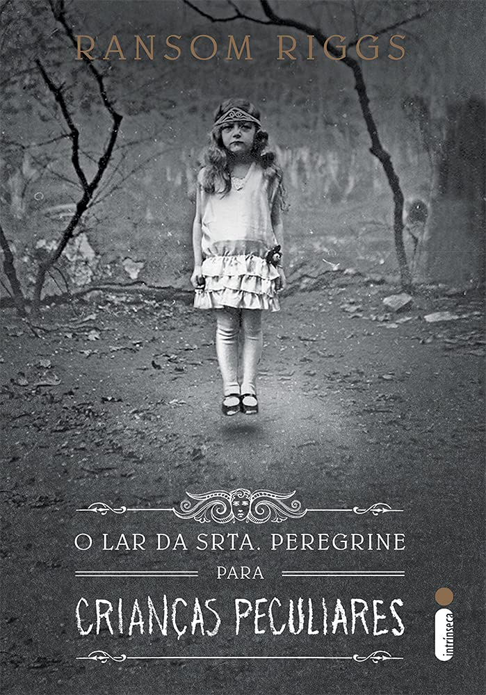

06/01/2022
Crianças Peculiares

Jacob sempre ouviu, desde pequeno, as histórias fantásticas de seu avô, Abe, que combateu na Segunda Guerra Mundial. Os relatos falavam de monstros, mas também de crianças com habilidades especiais, que flutuavam, soltavam fogo pelas mãos, até ficavam invisíveis, e que viviam em um casarão na Inglaterra, que vovô Abe jurava ter vivido também. À medida que foi crescendo, Jacob começou a interpretar as histórias apenas como histórias, metáforas, o que deixou seu avô um pouco triste. As coisas ficariam por isso mesmo se não fosse pelo dia no qual o jovem presencia a morte violenta do avô, um acontecimento que o faz perseguir seu passado e muda completamente o rumo de sua própria história.
Essa história é sensacional! Ransom Riggs toma um tema um tanto batido, de habilidades especiais, mas a maneira como a história é desenvolvida, o universo dos peculiares, todo o fato da história principal se passar na época da Segunda Guerra Mundial, tudo isso contribui para uma obra que sai do lugar comum e encanta justamente por sua originalidade. Gostei muito das regras desse novo universo, especialmente o fato de ele conviver ao lado do nosso, dos normais. Mas a melhor coisa no livro, para mim, foram as viagens no tempo; esse tema pode ser um pouco controverso e às vezes até complicado de lidar, mas aqui o autor utiliza um recurso bem interessante e, até o final desse primeiro livro, achei que foi muito eficiente e conseguiu moldar muito bem o tema.
E os personagens? Talvez Jacob, apesar de bem construído, não tenha sido o meu preferido; aliás, achei que a narração dele e suas atitudes às vezes parecem maduras demais. A única explicação possível para mim é que ele esteja narrando tudo com mais idade (e quem sabe? Ainda não li os outros livros!), mas pelo menos nesse primeiro volume, lê-lo é como acompanhar um adulto na pele de um adolescente. Claro, pode ser apenas um traço de sua personalidade conturbada, mas a impressão que dá é que você está lendo um livro com um personagem adulto, não adolescente. Mas isso é algo que ainda pode mudar com a leitura dos outros livros, pode até ter uma explicação, e foi uma das coisas que me intrigou e me deixou curiosa para os próximos volumes.
Jacob sempre ouviu, desde pequeno, as histórias fantásticas de seu avô, Abe, que combateu na Segunda Guerra Mundial. Os relatos falavam de monstros, mas também de crianças com habilidades especiais, que flutuavam, soltavam fogo pelas mãos, até ficavam invisíveis, e que viviam em um casarão na Inglaterra, que vovô Abe jurava ter vivido também. À medida que foi crescendo, Jacob começou a interpretar as histórias apenas como histórias, metáforas, o que deixou seu avô um pouco triste. As coisas ficariam por isso mesmo se não fosse pelo dia no qual o jovem presencia a morte violenta do avô, um acontecimento que o faz perseguir seu passado e muda completamente o rumo de sua própria história.
Essa história é sensacional! Ransom Riggs toma um tema um tanto batido, de habilidades especiais, mas a maneira como a história é desenvolvida, o universo dos peculiares, todo o fato da história principal se passar na época da Segunda Guerra Mundial, tudo isso contribui para uma obra que sai do lugar comum e encanta justamente por sua originalidade. Gostei muito das regras desse novo universo, especialmente o fato de ele conviver ao lado do nosso, dos normais. Mas a melhor coisa no livro, para mim, foram as viagens no tempo; esse tema pode ser um pouco controverso e às vezes até complicado de lidar, mas aqui o autor utiliza um recurso bem interessante e, até o final desse primeiro livro, achei que foi muito eficiente e conseguiu moldar muito bem o tema.
E os personagens? Talvez Jacob, apesar de bem construído, não tenha sido o meu preferido; aliás, achei que a narração dele e suas atitudes às vezes parecem maduras demais. A única explicação possível para mim é que ele esteja narrando tudo com mais idade (e quem sabe? Ainda não li os outros livros!), mas pelo menos nesse primeiro volume, lê-lo é como acompanhar um adulto na pele de um adolescente. Claro, pode ser apenas um traço de sua personalidade conturbada, mas a impressão que dá é que você está lendo um livro com um personagem adulto, não adolescente. Mas isso é algo que ainda pode mudar com a leitura dos outros livros, pode até ter uma explicação, e foi uma das coisas que me intrigou e me deixou curiosa para os próximos volumes.